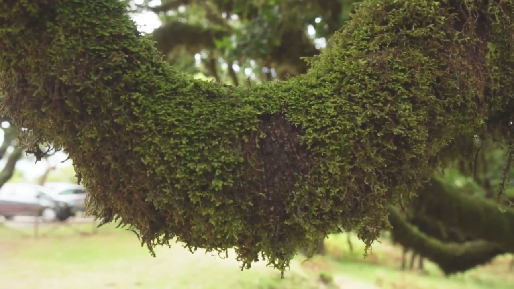
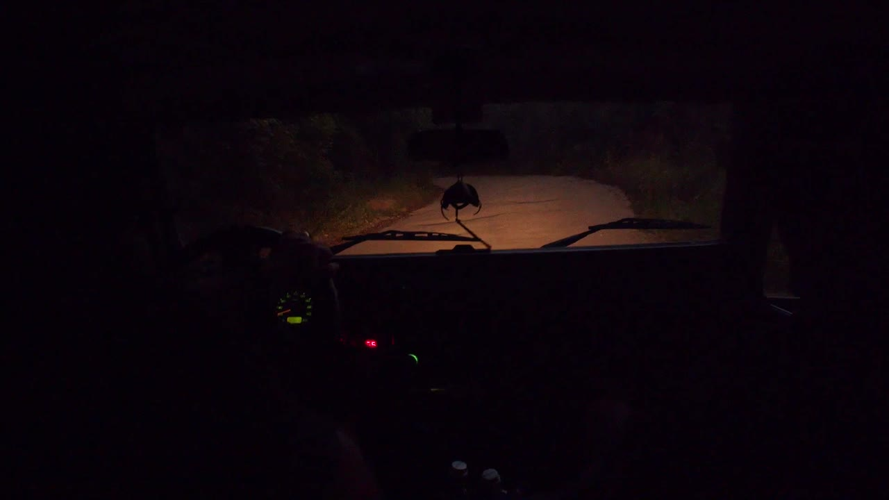
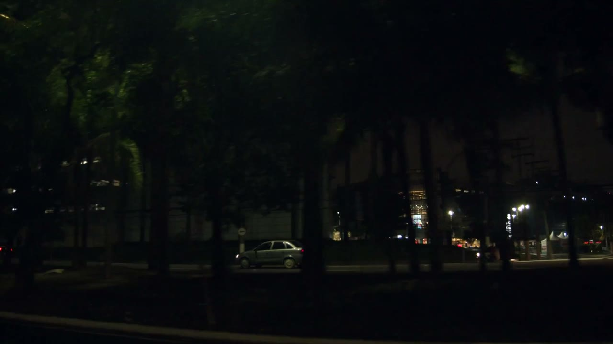
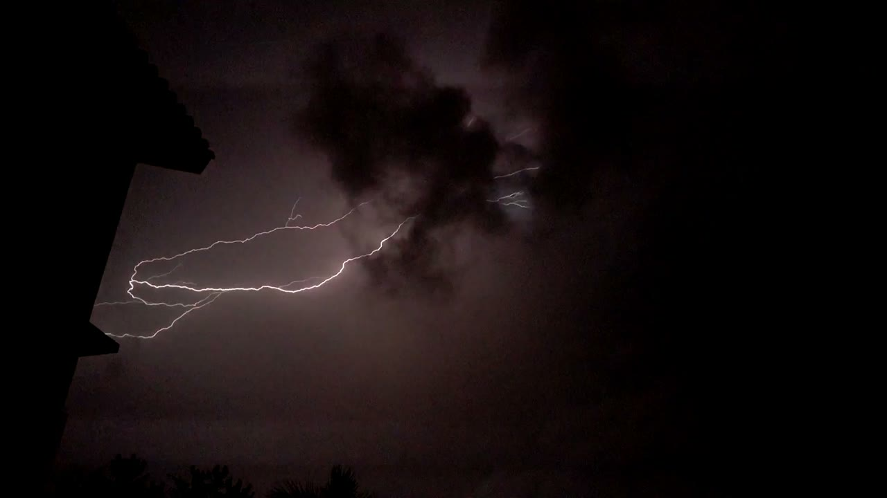
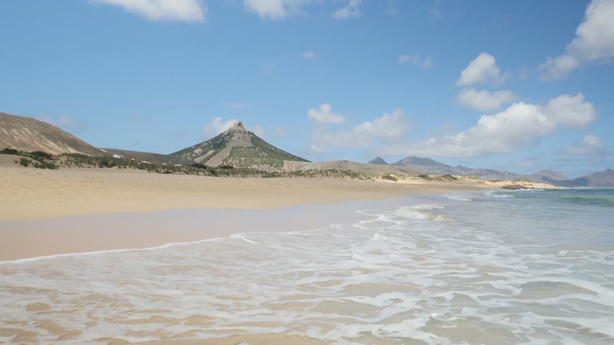

Find your atmosphere
Soundscapes for the room you need now
Explore calm, focused and restorative backgrounds, then open the matching atmosphere with its real audio layers and distinct cinematic loops.
Sound guides
Start with an intention or a place
Each guide explains what the atmosphere contains, how to shape it and which nearby scenes are worth trying next.
 Rain ambienceRain Sounds for Sleep, Focus & RelaxationExplore guide ↗
Rain ambienceRain Sounds for Sleep, Focus & RelaxationExplore guide ↗ Low-frequency calmBrown Noise for Focus, Sleep & CalmExplore guide ↗
Low-frequency calmBrown Noise for Focus, Sleep & CalmExplore guide ↗ Restful soundscapesSleep Sounds and Relaxing AmbienceExplore guide ↗Work and studyFocus Sounds for Work and StudyExplore guide ↗
Restful soundscapesSleep Sounds and Relaxing AmbienceExplore guide ↗Work and studyFocus Sounds for Work and StudyExplore guide ↗
Nature ambienceForest Sounds and Nature AmbienceExplore guide ↗
Roads after darkNight Drive Ambience and City RoadsExplore guide ↗
Urban ambienceCity Sounds and Traffic AmbienceExplore guide ↗
Live WeatherLive Weather Sounds and Matching AmbienceExplore guide ↗ Reading ambienceQuiet Library Sounds for ReadingExplore guide ↗
Reading ambienceQuiet Library Sounds for ReadingExplore guide ↗
Ocean ambienceBeach and Ocean Sounds for RelaxationExplore guide ↗Built for long listening
Mix, save, share and step away from the screen
Use individual layer volume, smooth crossfades, saved mixes, shareable links, Quiet View and Audio only. Atmosphere requires no account, and personal mixes remain on the current device.
Create an atmosphere